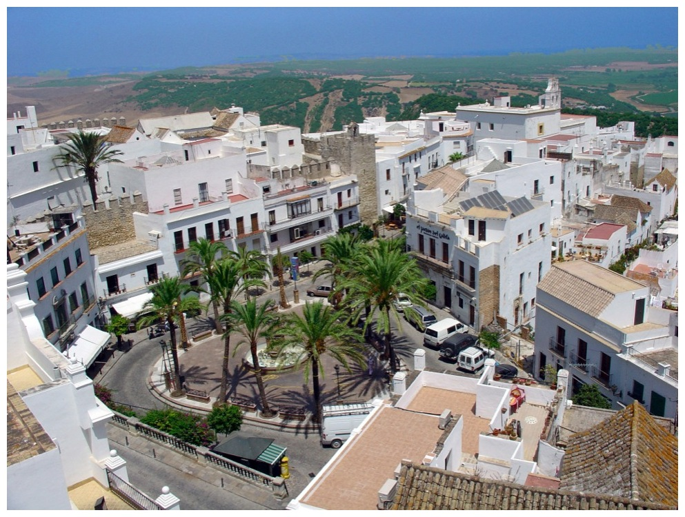
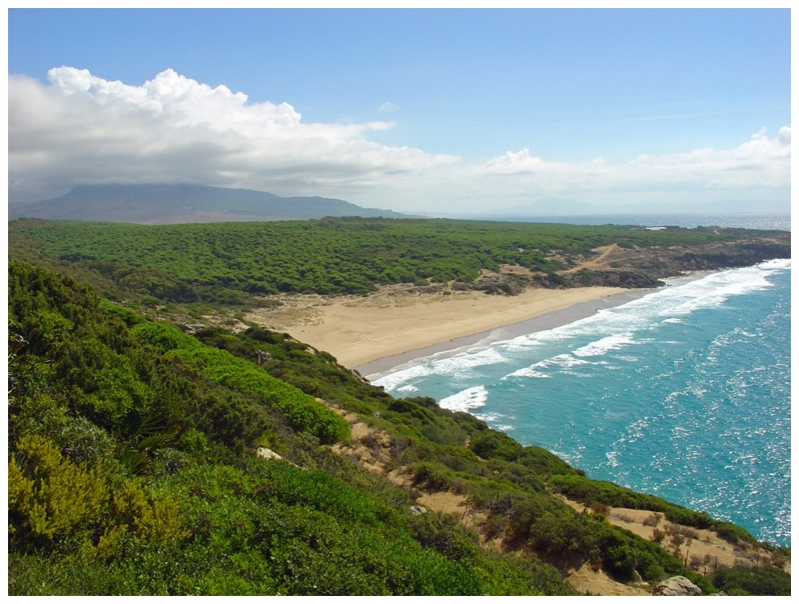
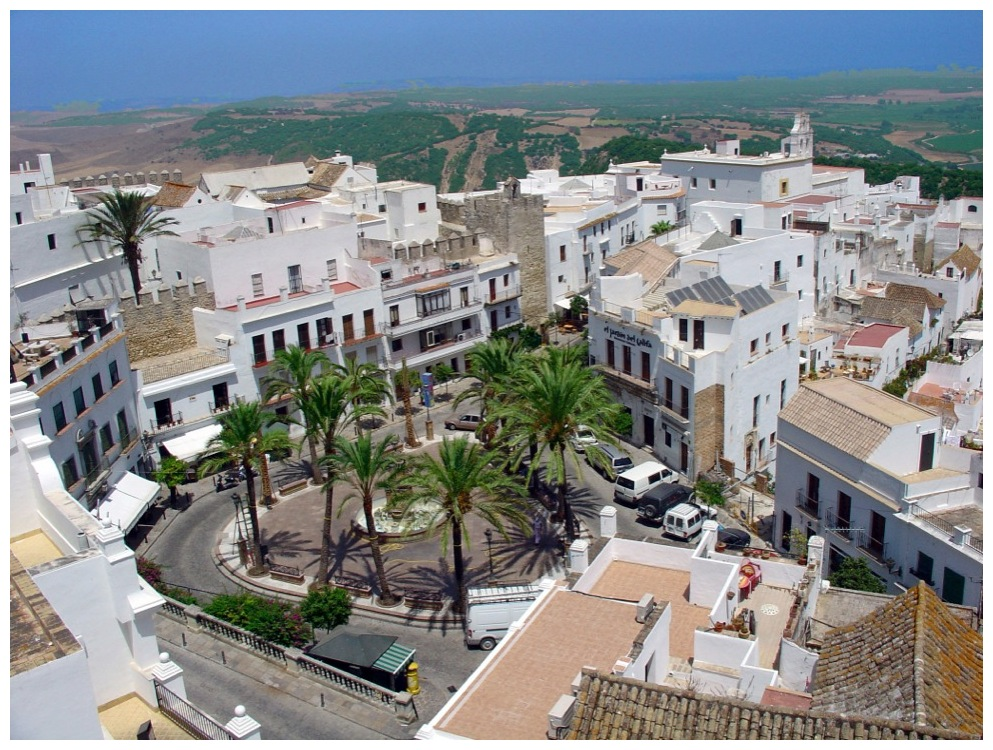
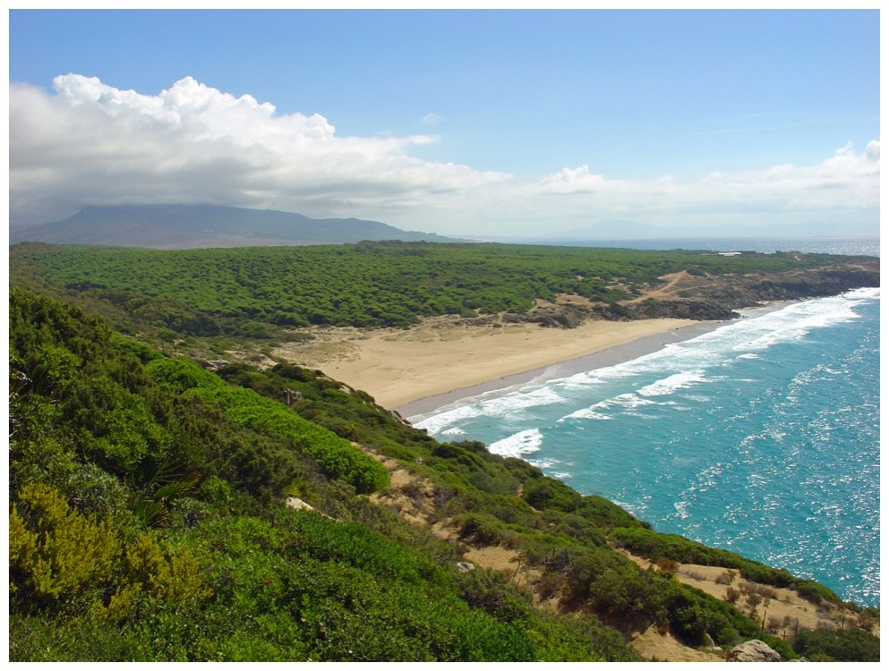

Vejer de la Frontera
Perched on a hilltop 10km inland, Vejer de la Frontera is unique amongst the historic pueblos blancos of Andalucía in its proximity to miles and miles of unspoilt coastline.
The old-town of Vejer is a labyrinth of narrow cobbled streets between white-washed houses that are redolent of its Moorish past. Surrounded by natural parks and overlooking the hills of the Alcornocales, Vejer makes an ideal base to explore the beautiful and historic province of Cádiz, with Cádiz city, Jerez and Seville all easy day-trips. On clear days Morocco appears tantalisingly close across the Straits of Gibraltar.
In recent years Vejer has established a reputation as the gastronomic capital of the region, with a concentration of excellent restaurants within the town and nearby taking advantage of quality local produce from land and sea.
Costa de la Luz
The Costa de la Luz is one of the last stretches of undeveloped coastline in Spain. From seaside Conil all the way south to the kite-surfing capital of Tarifa, you will find expansive beaches backed by unspoilt countryside.
The dune-backed sands of local El Palmar are becoming ever more popular with surfers, bringing a hipper vibe to the beach-front bars and restaurants. The umbrella pines above los Caños de Meca are perfect for shaded cliff-top walks and the beaches of the Cape of Trafalgar are a horse-rider's dream.
Pretty Zahara de los Atunes has wonderful wide beaches and is celebrated for its tuna caught in the traditional almadraba, and Bolonia has a magnificent sweeping bay and the important and extensive site of Roman ruins at Baelo Claudia.